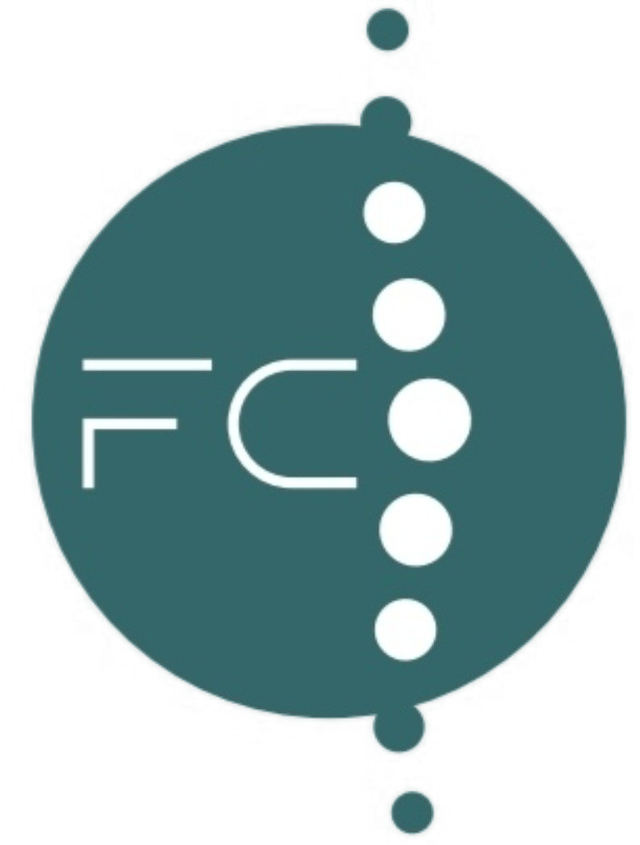
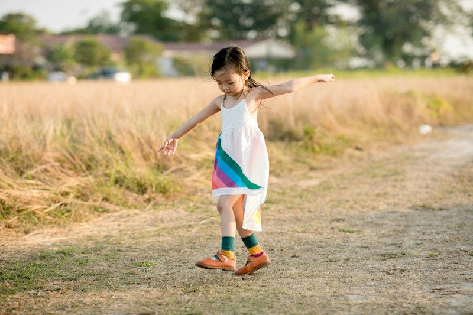
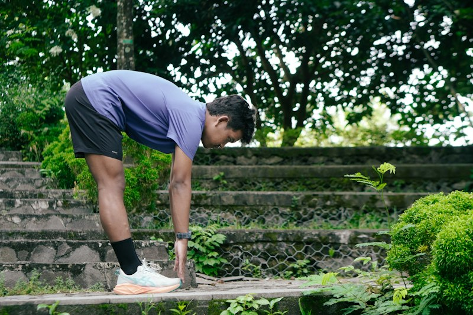
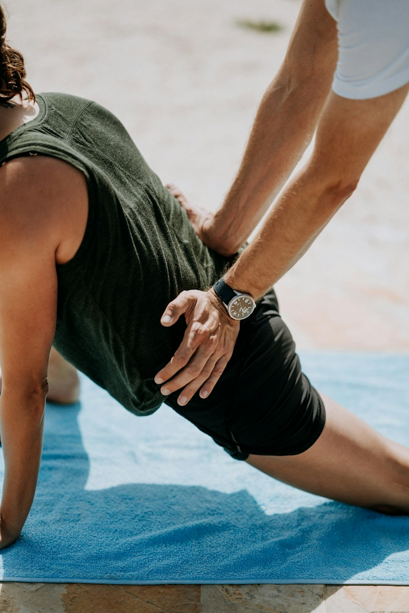
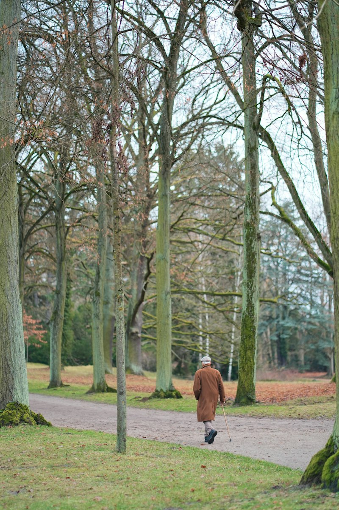
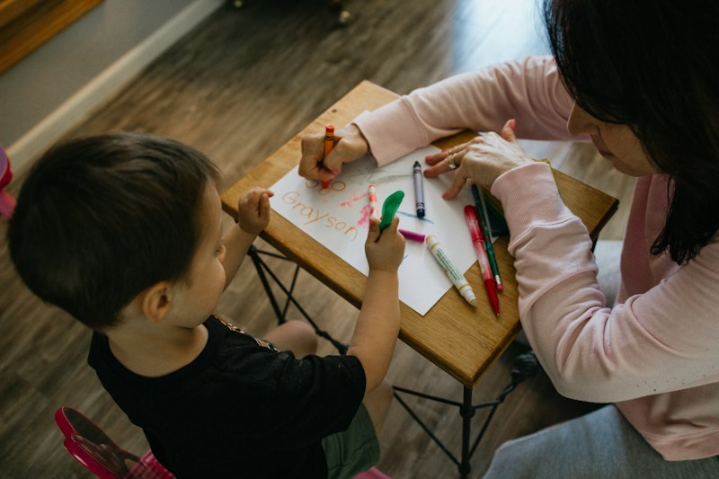

01 / 07
Fisioterapia
Avaliamos o movimento e a função do corpo e definimos, consigo, um plano de exercício e técnicas manuais com objetivos claros.
Exemplos do que pode incluir
- Avaliação funcional
- Exercício terapêutico
- Acompanhamento da evolução

FisioCanalClínica multidisciplinar
Sete especialidades numa só equipa, para o acompanhar com atenção em cada etapa do seu bem-estar.
ERS E180943Registo na Entidade Reguladora da Saúde
Mova o rato sobre a coluna, ou clique nela.
O que nos move
Começamos por ouvir e avaliar. Cada plano parte da pessoa e do que é importante para ela, não de um protocolo igual para todos.
Cuidar passa também por acolher. Um espaço onde se pergunta, se explica com calma e onde apetece voltar.
Objetivos definidos com a pessoa e revistos ao longo do caminho, para ganhar confiança e autonomia a cada etapa.
Quando as três se juntam, a coluna alinha-se.
Sete especialidades
Cada vértebra é uma área de cuidado. Juntas, sustentam o mesmo objetivo: o seu bem-estar.
01 / 07
Avaliamos o movimento e a função do corpo e definimos, consigo, um plano de exercício e técnicas manuais com objetivos claros.
Exemplos do que pode incluir
02 / 07
Um espaço de escuta, sem pressa, para compreender o que sente e encontrar ferramentas para o dia a dia.
Exemplos do que pode incluir
03 / 07
Uma abordagem manual que olha o corpo como um todo, a partir de uma avaliação individual.
Exemplos do que pode incluir
04 / 07
Orientação alimentar ajustada à sua rotina, aos seus gostos e aos seus objetivos, com foco em hábitos que se mantêm.
Exemplos do que pode incluir
05 / 07
Cuidados de enfermagem e apoio no acompanhamento de tratamentos, de acordo com a indicação clínica.
Exemplos do que pode incluir
06 / 07
Avaliação e acompanhamento da comunicação, da linguagem, da voz e da deglutição, em várias idades.
Exemplos do que pode incluir
07 / 07
Trabalhar o corpo, o gesto e a relação através do movimento e do jogo, ao ritmo de cada pessoa.
Exemplos do que pode incluir
Descrições ilustrativas. A adequação de cada acompanhamento depende sempre de avaliação por um profissional de saúde.
Como funciona
Um percurso simples, do primeiro contacto à autonomia. As vértebras vão encontrando o seu eixo, uma a uma.
Conversamos, avaliamos e percebemos o que se passa e o que é importante para si.
Definimos objetivos realistas e escolhemos, em conjunto, as especialidades que fazem sentido no seu caso.
As sessões decorrem com atenção ao conjunto. Os profissionais articulam-se para que o caminho seja coerente.
Revemos os objetivos, ajustamos o plano e preparamos a continuidade no seu dia a dia, fora da clínica.
Para quem
Uma coluna deitada: cinco vértebras, cinco formas de começar.

Acompanhamento ao ritmo de cada idade.

Para manter o corpo e a mente em equilíbrio.

Apoio para voltar às rotinas, com plano e objetivos.

Cuidados atentos para manter a autonomia.

Acompanhar também quem cuida, em conjunto.
Texto ilustrativo, sem carácter de aconselhamento clínico.

Marcar avaliação
Deixe o seu pedido e a equipa entra em contacto consigo. Se preferir, indique já a especialidade que procura.